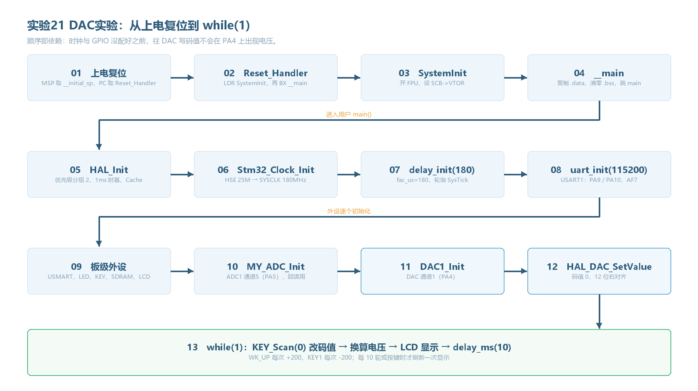
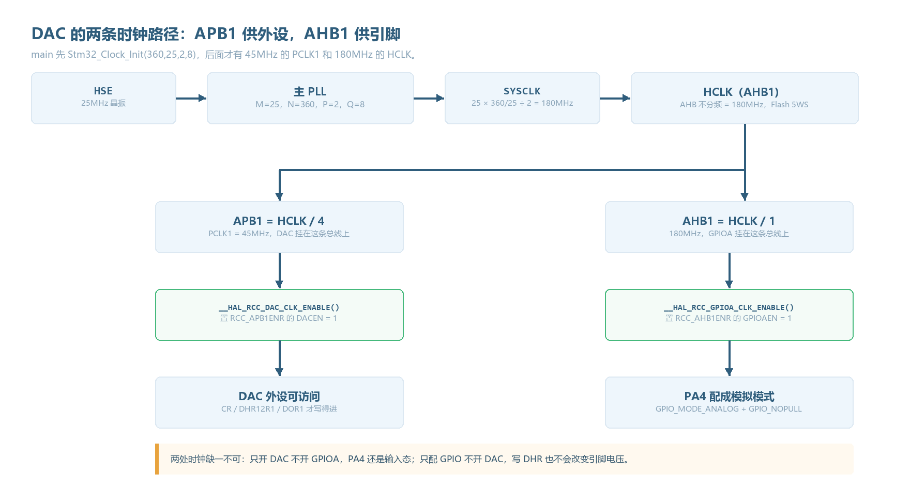
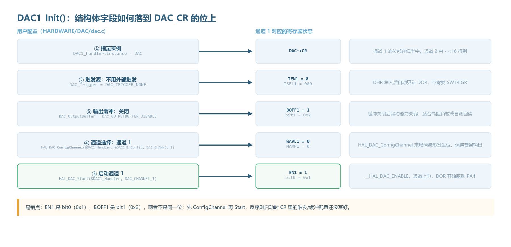
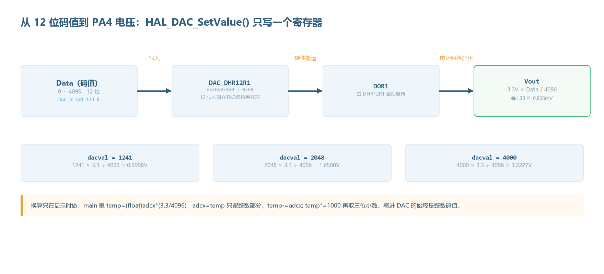
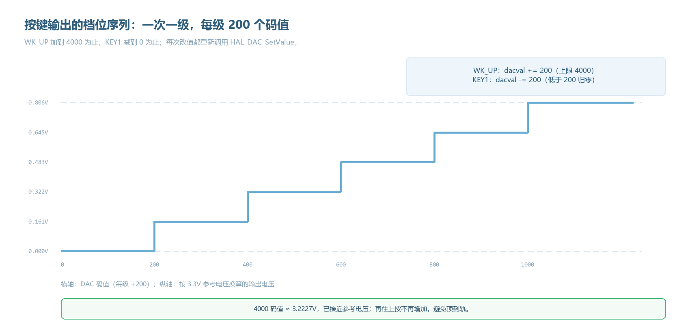
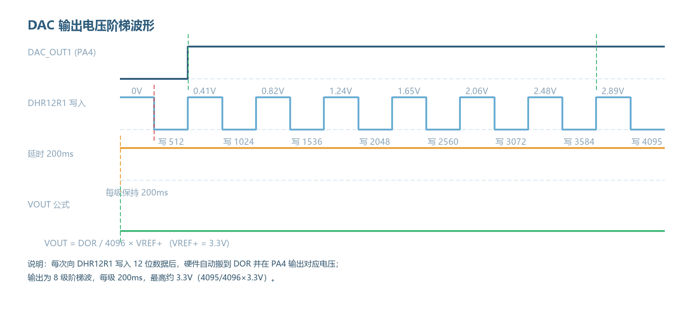

01 实验目标与硬件资源
本实验用 STM32F429 内部 DAC 的通道 1（引脚 PA4）输出一个可调直流电压：按键改变 12 位码值，DAC 立刻把码值变成模拟电压；同时用 ADC1 的通道 5（PA5）把同一电压采回来，显示在 LCD 上。板上 P11 用跳线帽把 ADC 与 DAC 短接，形成“自己输出、自己测量”的自测回路。
| 资源 | 引脚 / 参数 | 在本实验中的角色 |
|---|---|---|
| DAC 通道 1 | PA4，12 位，右对齐 | 输出，码值 0~4095 对应 0~3.3V |
| 参考电压 | 3.3V（P5 跳线选择） | 决定量程：每 1 个码值约 3.3/4096 ≈ 0.806mV |
| ADC1 通道 5 | PA5，12 位，采样 480 周期 | 回读 DAC 输出电压，10 次取平均 |
| WK_UP | PA0，下拉，高电平有效 | 码值 +200（上限 4000） |
| KEY1 | PH2，上拉，低电平有效 | 码值 -200（低于 200 归零） |
| DS0 | PB1 | 每次刷新显示时翻转，做心跳指示 |
| 串口 1 | PA9 / PA10，115200 | printf 与 USMART 命令行 |
02 目录与文件分工
工程沿用正点原子的分层：USER 放 main 与 CMSIS 系统文件，CORE 放启动文件，SYSTEM 放时钟/延时/串口这些“地基”，HARDWARE 放板级外设驱动，HALLIB 是 ST 的库。
| 文件 | 负责什么 | 本页看哪里 |
|---|---|---|
USER/main.c | 初始化顺序、按键改码值、电压换算与显示 | 第 03、10、11 节 |
CORE/startup_stm32f429xx.s | 栈堆定义、向量表、Reset_Handler | 第 04 节 |
USER/system_stm32f4xx.c | SystemInit：开 FPU、设 VTOR | 第 05 节 |
SYSTEM/sys/sys.c | Stm32_Clock_Init：PLL 与总线分频 | 第 06 节 |
SYSTEM/delay/delay.c | delay_init / delay_us / delay_ms（轮询 SysTick） | 第 06 节 |
SYSTEM/usart/usart.c | uart_init 与 fputc 重定向 | 第 06 节 |
HARDWARE/DAC/dac.c | DAC1_Init、HAL_DAC_MspInit、DAC1_Set_Vol | 第 07~09 节 |
HARDWARE/ADC/adc.c | MY_ADC_Init、Get_Adc_Average（回读用） | 第 11 节 |
HALLIB/.../stm32f4xx_hal_dac.c | HAL_DAC_Init / ConfigChannel / Start / SetValue | 第 08、09 节 |
USMART/usmart_config.c | 把 DAC 设置函数注册进命令行 | 第 09 节 |
USMART 注册表里写的是函数指针加一串名字：(void*)DAC1_Set_Vol, "void Dac1_Set_Vol(u16 vol)"。执行走指针，不受字符串大小写影响；但在串口里敲命令时要按字符串里的 Dac1_Set_Vol 拼写。
HAL_Init，其余 HALLIB 内容当作黑盒，避免把库的体量当成工程的复杂度。03 启动流程总览

main 函数全文
#include "sys.h" // 系统头文件：类型定义、寄存器映射 #include "delay.h" // 延时函数声明 #include "usart.h" // 串口初始化与 printf 重定向 #include "led.h" // LED 驱动 #include "key.h" // 按键扫描 #include "lcd.h" // LCD 显示驱动 #include "sdram.h" // SDRAM 初始化（LCD 显存） #include "usmart.h" // 串口命令行组件 #include "adc.h" // ADC1 回读驱动 #include "dac.h" // DAC1 输出驱动 int main(void) // 程序入口，C 库 __main 跳转至此 { // 函数体开始 u16 adcx; // 暂存 ADC/DAC 采样的 12 位码值 float temp; // 浮点中间量，用于电压换算与小数拆分 u8 t=0; // 刷新计数器，累加到 10 触发一次显示 u16 dacval=0; // DAC 码值，0~4095 u8 key; // 保存按键扫描返回值 HAL_Init(); // HAL 库基础：Cache、优先级分组、1ms 时基 Stm32_Clock_Init(360,25,2,8); // 设置时钟,180Mhz delay_init(180); // 初始化延时函数，fac_us=180 uart_init(115200); // 初始化USART usmart_dev.init(90); // 初始化USMART，参数为时钟/2 LED_Init(); // 初始化LED KEY_Init(); // 初始化按键 SDRAM_Init(); // 初始化SDRAM（LCD 显存要用） LCD_Init(); // 初始化LCD MY_ADC_Init(); // 初始化ADC1 DAC1_Init(); // 初始化DAC1 POINT_COLOR=RED; // 标题行用红色字体 LCD_ShowString(30,50,200,16,16,"Apollo STM32F4/F7"); // 显示开发板型号 LCD_ShowString(30,70,200,16,16,"DAC TEST"); // 显示实验名称 LCD_ShowString(30,90,200,16,16,"ATOM@ALIENTEK"); // 显示厂商 LCD_ShowString(30,110,200,16,16,"2016/1/24"); // 显示日期 LCD_ShowString(30,130,200,16,16,"WK_UP:+ KEY1:-"); // 按键操作提示 POINT_COLOR=BLUE; // 设置字体为蓝色 LCD_ShowString(30,150,200,16,16,"DAC VAL:"); // DAC 码值标签 LCD_ShowString(30,170,200,16,16,"DAC VOL:0.000V"); // DAC 电压标签（初值） LCD_ShowString(30,190,200,16,16,"ADC VOL:0.000V"); // ADC 回读电压标签（初值） HAL_DAC_SetValue(&DAC1_Handler,DAC_CHANNEL_1,DAC_ALIGN_12B_R,0); // 初始值为0 // ……while(1) 主循环见第 11 节，此处省略约 40 行 } // main 函数结束
- HAL_Init 必须第一：它建立 SysTick 时基，后面的
HAL_Delay、库内部超时判断都依赖uwTick；此时时钟还是复位后的 HSI 16MHz。 - 时钟在延时之前：
delay_init(180)的入参就是主频，传错值则 delay_us 全部按错误倍率计数；必须先Stm32_Clock_Init(360,25,2,8)把主频变成 180MHz。 - 串口在 USMART 之前：USMART 靠串口收发命令，
uart_init(115200)没跑就初始化 USMART，命令行不会有任何反应。 - SDRAM 在 LCD 之前：LCD_Init 里有 printf，并且 RGB 屏要用 SDRAM 当显存，先备好存储再初始化屏幕。
- DAC 放在最后：它只依赖 GPIOA 与 APB1 时钟，这两者由
Stm32_Clock_Init提供；放在 ADC 之后便于对照“一个读、一个写”。 - 所有初始化返回 void，没有错误分支；库里的
if(ret!=HAL_OK) while(1)只出现在时钟函数中。
04 启动文件与向量表
启动文件是 MDK 版本的 CORE/startup_stm32f429xx.s，先定义栈 0x400（1KB）与堆 0x200（512B），再用 __Vectors 依次摆放异常向量。
Stack_Size EQU 0x400 ; 栈大小 0x400 = 1KB AREA STACK, NOINIT, READWRITE, ALIGN=3 ; 定义 STACK 段，不初始化、可读写、8 字节对齐 Stack_Mem SPACE Stack_Size ; 预留 Stack_Size 字节作为栈空间 __initial_sp ; 栈顶标号，向量表第 0 项取这个地址 Heap_Size EQU 0x200 ; 堆大小 0x200 = 512B AREA HEAP, NOINIT, READWRITE, ALIGN=3 ; 定义 HEAP 段 __heap_base ; 堆起始地址 Heap_Mem SPACE Heap_Size ; 预留 Heap_Size 字节作为堆空间 __heap_limit ; 堆结束地址 AREA RESET, DATA, READONLY ; 定义 RESET 数据段，只读 EXPORT __Vectors ; 导出向量表符号供链接器使用 __Vectors DCD __initial_sp ; 第 0 项：初始 MSP DCD Reset_Handler ; 第 1 项：复位向量 DCD NMI_Handler ; 不可屏蔽中断 DCD HardFault_Handler ; 硬错误 DCD MemManage_Handler ; 存储器管理错误 DCD BusFault_Handler ; 总线错误 DCD UsageFault_Handler ; 用法错误 ; ……中间为保留项、SVC、DebugMon、PendSV DCD SysTick_Handler ; SysTick 滴答定时器中断 ; ……外部中断向量，本实验不额外使用
- 第 0 项是栈顶：CPU 复位后先把
__initial_sp装入 MSP，C 语言的局部变量、函数调用栈才能正常工作。 - 第 1 项是复位入口：
Reset_Handler是上电后执行的第一段代码，它再去调SystemInit和__main。 - 栈 1KB 足够本实验：main 里局部变量不多，嵌套调用浅；若使用 printf 的浮点格式化，栈消耗会增大，必要时调大
Stack_Size。 - 堆主要给 malloc：本工程未使用动态内存，
Heap_Size=0x200只是保留默认值。
Reset_Handler 只有四条有效指令
Reset_Handler PROC ; 复位处理函数定义开始 EXPORT Reset_Handler [WEAK] ; 弱导出，用户可同名覆盖 IMPORT SystemInit ; 声明外部符号 SystemInit IMPORT __main ; 声明外部符号 __main（C 库入口） LDR R0, =SystemInit ; 把 SystemInit 地址装入 R0 BLX R0 ; 调用 SystemInit，开 FPU、设向量表 LDR R0, =__main ; 把 __main 地址装入 R0 BX R0 ; 跳转 __main，不再返回 ENDP ; 函数定义结束
- 顺序固定：先调
SystemInit打开 FPU 并设置向量表偏移，再进__main。若反过来，C 库初始化阶段用到浮点会触发 UsageFault。 - __main 不是 main：它是 C 库入口，负责按分散加载文件把
.data从 Flash 复制到 SRAM、把.bss清零，最后才跳用户main()。这也是DAC1_Handler这种全局变量上电为 0 的原因。 - 弱符号机制：所有 Handler 都带
[WEAK]，用户在 C 里写同名函数（如SysTick_Handler）即可覆盖启动文件里的死循环桩。 - 本例没有自定义汇编：工程中未找到额外的 .s 文件，也没有改写
Reset_Handler；栈顶就是Stack_Mem + 0x400。
05 SystemInit 与 HAL_Init
SystemInit：只做两件事
void SystemInit(void) // 复位后第一个 C 函数，做内核级准备 { // 函数体开始 /* FPU settings ------------------------------------------------------------*/ #if (__FPU_PRESENT == 1) && (__FPU_USED == 1) // 只有芯片带 FPU 且工程启用浮点才编译 SCB->CPACR |= ((3UL << 10*2)|(3UL << 11*2)); /* CP10、CP11 全访问，main 里的 float 才能算 */ #endif /* Reset the RCC clock configuration to the default reset state …… 省略 RCC 复位部分 */ /* Configure the Vector Table location add offset address ------------------*/ #ifdef VECT_TAB_SRAM // 若定义了向量表放在 SRAM SCB->VTOR = SRAM_BASE | VECT_TAB_OFFSET; // 向量表重定位到 SRAM #else SCB->VTOR = FLASH_BASE | VECT_TAB_OFFSET; /* 向量表指向 Flash 起始 0x08000000 */ #endif } // 函数结束，不配置系统时钟
- FPU 必须在 __main 之前开：
__main里的 C 库初始化可能用到浮点指令，若 CPACR 未放行会触发 UsageFault。 - 不配置系统时钟：SystemInit 只把 RCC 复位到默认 HSI 16MHz，真正切到 180MHz 是
Stm32_Clock_Init的事。 - VTOR 指向 Flash：本工程没有把向量表搬到 SRAM，所以走
FLASH_BASE | 0，中断向量从 0x08000000 取。 - 无返回值：该函数是
void，复位后只能成功，没有错误处理分支。
HAL_Init：Cache、优先级分组、时基
HAL_StatusTypeDef HAL_Init(void) // HAL 库初始化入口，返回状态码 { // 函数体开始 /* 省略三个条件编译块：指令 Cache、数据 Cache、预取，均由 stm32f4xx_hal_conf.h 置 1 */ HAL_NVIC_SetPriorityGrouping(NVIC_PRIORITYGROUP_2); // 中断优先级分组2 /* Use systick as time base source and configure 1ms tick */ HAL_InitTick(TICK_INT_PRIORITY); // TICK_INT_PRIORITY = 0x0F HAL_MspInit(); // 弱函数，工程未重写，空实现 return HAL_OK; // 返回成功状态 } // 函数结束 // hal.c 中的弱定义：重装值 = HCLK / 1000 __weak HAL_StatusTypeDef HAL_InitTick(uint32_t TickPriority) // 弱定义，用户可重写时基 { // 函数体开始 HAL_SYSTICK_Config(HAL_RCC_GetHCLKFreq()/1000); // 配置 SysTick 重装值，产生 1ms 中断 HAL_NVIC_SetPriority(SysTick_IRQn, TickPriority ,0); // 设置 SysTick 中断优先级 return HAL_OK; // 返回成功 } // 函数结束
- 第一次：HAL_Init 执行时 SystemInit 只把时钟复位到 HSI 16MHz，所以 SysTick 重装值是 16000，tick 周期 1ms。
- 第二次：
Stm32_Clock_Init最后调用HAL_RCC_ClockConfig，该函数末尾固定执行HAL_InitTick(TICK_INT_PRIORITY)，按新的 HCLK 180MHz 重装 180000。两次都是 1ms，只是计数基准变了。 - 第三次：
delay_init(180)又调用HAL_SYSTICK_CLKSourceConfig(SYSTICK_CLKSOURCE_HCLK)显式指定时钟源，并令fac_us=180。 - 优先级 0x0F：SysTick 抢占优先级最低，不会抢占按键、串口等外设中断；分组 2 表示 2 位抢占 + 2 位子优先级。
- HAL_MspInit 是弱函数：工程里未重写，因此 HAL_Init 不会打开任何外设时钟，DAC 的时钟只能靠
HAL_DAC_MspInit自己开。
06 时钟 / 延时 / 串口
Stm32_Clock_Init：PLL 参数直接由 main 传入
void Stm32_Clock_Init(u32 plln,u32 pllm,u32 pllp,u32 pllq) // PLL 参数由 main 传入：360,25,2,8 { // 函数体开始 HAL_StatusTypeDef ret = HAL_OK; // 状态变量，初始化为成功 RCC_OscInitTypeDef RCC_OscInitStructure; // 振荡器配置结构体 RCC_ClkInitTypeDef RCC_ClkInitStructure; // 总线时钟配置结构体 __HAL_RCC_PWR_CLK_ENABLE(); // 使能PWR时钟 __HAL_PWR_VOLTAGESCALING_CONFIG(PWR_REGULATOR_VOLTAGE_SCALE1); // 调压器级别1 RCC_OscInitStructure.OscillatorType=RCC_OSCILLATORTYPE_HSE; // 选择 HSE 作为时钟源 RCC_OscInitStructure.HSEState=RCC_HSE_ON; // 打开 25MHz 外部晶振 RCC_OscInitStructure.PLL.PLLState=RCC_PLL_ON; // 开启 PLL RCC_OscInitStructure.PLL.PLLSource=RCC_PLLSOURCE_HSE; // PLL 输入源为 HSE RCC_OscInitStructure.PLL.PLLM=pllm; // 25 RCC_OscInitStructure.PLL.PLLN=plln; // 360 RCC_OscInitStructure.PLL.PLLP=pllp; // 2 RCC_OscInitStructure.PLL.PLLQ=pllq; // 8 ret=HAL_RCC_OscConfig(&RCC_OscInitStructure); // 应用振荡器与 PLL 配置 if(ret!=HAL_OK) while(1); // 配置失败则死等，便于排查 ret=HAL_PWREx_EnableOverDrive(); // 180MHz 必须开 Over-Drive if(ret!=HAL_OK) while(1); // 失败死等 RCC_ClkInitStructure.ClockType=(RCC_CLOCKTYPE_SYSCLK|RCC_CLOCKTYPE_HCLK|RCC_CLOCKTYPE_PCLK1|RCC_CLOCKTYPE_PCLK2); // 配置四类时钟 RCC_ClkInitStructure.SYSCLKSource=RCC_SYSCLKSOURCE_PLLCLK; // 系统时钟源选 PLL RCC_ClkInitStructure.AHBCLKDivider=RCC_SYSCLK_DIV1; // AHB 不分频 RCC_ClkInitStructure.APB1CLKDivider=RCC_HCLK_DIV4; // APB1 = 45MHz RCC_ClkInitStructure.APB2CLKDivider=RCC_HCLK_DIV2; // APB2 = 90MHz ret=HAL_RCC_ClockConfig(&RCC_ClkInitStructure,FLASH_LATENCY_5); // 5WS if(ret!=HAL_OK) while(1); // 失败死等 } // 函数结束
- VCO = HSE/M × N：25MHz ÷ 25 × 360 = 360MHz，PLLM 必须让 VCO 输入在 1~2MHz 范围内。
- SYSCLK = VCO / P：360 ÷ 2 = 180MHz，P 只能是 2/4/6/8。
- APB1 必须 ≤ 45MHz：F429 的 APB1 上限 45MHz，所以 HCLK 180MHz 必须除以 4；DAC 挂在 APB1，这决定了 DAC 的工作时钟。
- Over-Drive 不能省：180MHz 超过了普通调压器的上限，必须开
HAL_PWREx_EnableOverDrive提升内核供电。 - FLASH_LATENCY_5：180MHz 下 Flash 访问需要 5 个等待周期，配置在
HAL_RCC_ClockConfig内部完成。
| 时钟 | 算式 | 结果 |
|---|---|---|
| PLL VCO | 25MHz ÷ 25 × 360 | 360MHz |
| SYSCLK | 360MHz ÷ 2 | 180MHz |
| HCLK / AHB1 | 180MHz ÷ 1 | 180MHz |
| PCLK1 / APB1 | 180MHz ÷ 4 | 45MHz（DAC 所在总线） |
| PCLK2 / APB2 | 180MHz ÷ 2 | 90MHz |
| USB / SDIO | 360MHz ÷ 8 | 45MHz |
delay_init 与 delay_us：轮询，不依赖中断
void delay_init(u8 SYSCLK) // 初始化延时，SYSCLK 为主频 MHz 数 { // 函数体开始 HAL_SYSTICK_CLKSourceConfig(SYSTICK_CLKSOURCE_HCLK); // SysTick 时钟源 = HCLK fac_us=SYSCLK; // 180，每 us 计 180 个数 // 本工程 SYSTEM_SUPPORT_OS 为 0，下面的 OS 分支不编译 } // 函数结束 void delay_us(u32 nus) // 延时 nus 微秒，纯轮询 { // 函数体开始 u32 ticks; // 总共需要的 SysTick 节拍数 u32 told,tnow,tcnt=0; // told=上次读数，tnow=当前读数，tcnt=已计数 u32 reload=SysTick->LOAD; // LOAD 的值 ticks=nus*fac_us; // 需要的节拍数 told=SysTick->VAL; // 刚进入时的计数器值 while(1) // 轮询直到累计节拍达标 { tnow=SysTick->VAL; // 读取当前递减计数器 if(tnow!=told) // 计数器有变化才累加 { if(tnow<told)tcnt+=told-tnow; // 普通递减，差值即为经过节拍 else tcnt+=reload-tnow+told; // 递减计数器，跨过重装点 told=tnow; // 更新上次读数 if(tcnt>=ticks)break; // 达到目标节拍数则退出 } } } // 函数结束
delay_us直接读SysTick->VAL做差，属于纯轮询；即使全局关中断也能延时，代价是 CPU 空转。delay_ms(n)在非 OS 分支里就是for(i=0;i<n;i++) delay_us(1000)，所以delay_ms(10)约等于 10 次 1000us 轮询。- 主循环末尾的
delay_ms(10)加上按键扫描/显示刷新，实际刷新周期约 100ms（t 累计到 10）。 fac_us=SYSCLK传的是 MHz 数值 180，若误传成 180000000，任何延时都会被放大 100 万倍，表现为“卡死”。
uart_init：8N1，PA9/PA10 复用 AF7
void uart_init(u32 bound) // 初始化 USART1，bound=波特率 115200 { // 函数体开始 UART1_Handler.Instance=USART1; // 绑定 USART1 外设 UART1_Handler.Init.BaudRate=bound; // 115200 UART1_Handler.Init.WordLength=UART_WORDLENGTH_8B; // 8 位数据位 UART1_Handler.Init.StopBits=UART_STOPBITS_1; // 1 位停止位 UART1_Handler.Init.Parity=UART_PARITY_NONE; // 无校验 UART1_Handler.Init.HwFlowCtl=UART_HWCONTROL_NONE; // 无硬件流控 UART1_Handler.Init.Mode=UART_MODE_TX_RX; // 收发模式 HAL_UART_Init(&UART1_Handler); // 内部会调 HAL_UART_MspInit } // 函数结束 // MspInit 中：PA9 复用推挽、上拉、AF7；PA10 沿用同一结构体再改 Pin GPIO_Initure.Pin=GPIO_PIN_9; // 配置 PA9（TX） GPIO_Initure.Mode=GPIO_MODE_AF_PP; // 复用推挽输出 GPIO_Initure.Pull=GPIO_PULLUP; // 上拉，空闲时保持高电平 GPIO_Initure.Speed=GPIO_SPEED_FAST; // 快速翻转速度 GPIO_Initure.Alternate=GPIO_AF7_USART1; // 复用功能 AF7 = USART1 HAL_GPIO_Init(GPIOA,&GPIO_Initure); // 写入 GPIOA 寄存器
- AF7 是 USART1：PA9/PA10 的复用功能表里 AF7 对应 USART1，配错 AF 则引脚不会连到串口外设。
- 推挽 + 上拉：TX 用推挽输出保证电平，RX 用上拉避免悬空导致乱码。
- 波特率由 PCLK2 分频：USART1 挂 APB2（90MHz），
HAL_UART_Init内部按 90MHz/115200 算出 USARTDIV。 - printf 走 fputc：工程重定向了
fputc，轮询 TXE 位后写 DR，所以 printf 是阻塞式发送。
fputc 里轮询 USART1->SR 的 TXE 位再写 DR。07 DAC 时钟使能与 GPIO 模拟模式
HAL_DAC_Init 不直接配引脚，它在句柄状态为 HAL_DAC_STATE_RESET 时调用 HAL_DAC_MspInit(hdac)，把“板子上到底接哪个引脚、开哪个时钟”交给用户写。本工程的实现只有三件事：
void HAL_DAC_MspInit(DAC_HandleTypeDef* hdac) // HAL 留给板级的钩子，开时钟配引脚 { // 函数体开始 GPIO_InitTypeDef GPIO_Initure; // GPIO 配置结构体（局部变量） __HAL_RCC_DAC_CLK_ENABLE(); // 使能DAC时钟（APB1） __HAL_RCC_GPIOA_CLK_ENABLE(); // 开启GPIOA时钟（AHB1） GPIO_Initure.Pin=GPIO_PIN_4; // PA4 GPIO_Initure.Mode=GPIO_MODE_ANALOG; // 模拟 GPIO_Initure.Pull=GPIO_NOPULL; // 不带上下拉 HAL_GPIO_Init(GPIOA,&GPIO_Initure); // 写入 GPIOA 寄存器，PA4 变模拟口 } // 函数结束

- 模拟模式断开数字输入：
GPIO_MODE_ANALOG会把施密特触发器关掉，引脚直接连到模拟开关，DAC 的输出电压才不会被输入保护电路影响。 - 不需要复用 AF：DAC 的模拟输出不经过 AF 矩阵，配
GPIO_AF*反而可能把引脚接到别的数字功能上。 - 上下拉会分压：若配了上拉/下拉，内部 40kΩ 电阻与 DAC 输出缓冲形成分压，实测电压会偏离
码值×3.3/4096。这里用GPIO_NOPULL。 - 两个时钟都要开：DAC 在 APB1（
RCC_APB1ENR的 DACEN），GPIOA 在 AHB1（RCC_AHB1ENR的 GPIOAEN）；漏开 GPIOA 时钟，HAL_GPIO_Init对寄存器的写入会被总线忽略且不报错。 - 没配 Speed：结构体里
Speed未赋值，对模拟模式无影响；这点与串口必须配GPIO_SPEED_FAST不同。
08 DAC 初始化结构体逐字段
DAC_HandleTypeDef DAC1_Handler; // DAC句柄，全局变量，上电由 __main 清零 void DAC1_Init(void) // DAC1 通道 1 初始化入口 { // 函数体开始 DAC_ChannelConfTypeDef DACCH1_Config; // 通道配置结构体（局部变量） DAC1_Handler.Instance=DAC; // 指向 DAC 外设基址 0x40007400 HAL_DAC_Init(&DAC1_Handler); // 初始化DAC，内部调用 HAL_DAC_MspInit DACCH1_Config.DAC_Trigger=DAC_TRIGGER_NONE; // 不使用触发功能 DACCH1_Config.DAC_OutputBuffer=DAC_OUTPUTBUFFER_DISABLE;// DAC1输出缓冲关闭 HAL_DAC_ConfigChannel(&DAC1_Handler,&DACCH1_Config,DAC_CHANNEL_1);// DAC通道1配置 HAL_DAC_Start(&DAC1_Handler,DAC_CHANNEL_1); // 开启DAC通道1 } // 函数结束
- DAC_TRIGGER_NONE：不使用任何触发源，写 DHR 后数据自动搬运到 DOR，输出立即更新；若选软件触发则每次写值后还要调
HAL_DAC_Start触发。 - DAC_OUTPUTBUFFER_DISABLE：关闭片内输出缓冲，PA4 直接连电阻网络；优点是无缓冲压降、电压更准，缺点是带载能力弱，不能直接接低阻负载。
- 先 ConfigChannel 再 Start：配置 CR 的触发/缓冲位后才置 EN1，避免上电瞬间按复位默认值驱动引脚。
- 句柄全局清零：
DAC1_Handler是全局变量，__main清零后 State 为 RESET，HAL_DAC_Init才会调 MspInit 开时钟。
| 字段 / 参数 | 取值 | 落到寄存器 |
|---|---|---|
DAC_Trigger | DAC_TRIGGER_NONE（0x00） | CR.TEN1=0、CR.TSEL1=000 |
DAC_OutputBuffer | DAC_OUTPUTBUFFER_DISABLE（DAC_CR_BOFF1=0x02） | CR.BOFF1=1 |
Channel | DAC_CHANNEL_1（0x00） | 所有位按 <<0 处理，通道 2 才是 <<16 |
| 波形发生 | 结构体不提供 | HAL_DAC_ConfigChannel 末尾清 WAVE1/MAMP1 |
| 使能 | HAL_DAC_Start | __HAL_DAC_ENABLE → CR.EN1=1 |

库函数内部并不是逐位或运算，而是“先读 CR、清掉本通道的 5 个位、再整体写回”：
tmpreg1 = hdac->Instance->CR; // 读出当前 CR 寄存器值 /* Clear BOFFx, TENx, TSELx, WAVEx and MAMPx bits */ tmpreg1 &= ~(((uint32_t)(DAC_CR_MAMP1 | DAC_CR_WAVE1 | DAC_CR_TSEL1 | DAC_CR_TEN1 | DAC_CR_BOFF1)) << Channel); // 清掉本通道的 5 个配置位 tmpreg2 = (sConfig->DAC_Trigger | sConfig->DAC_OutputBuffer); // 合并触发与缓冲两个字段 tmpreg1 |= tmpreg2 << Channel; // 按通道偏移写入新值 hdac->Instance->CR = tmpreg1; // 整体写回 CR /* Disable wave generation */ hdac->Instance->CR &= ~(DAC_CR_WAVE1 << Channel); // 强制关闭波形发生（噪声/三角波）
DAC_ChannelConfTypeDef只有DAC_Trigger与DAC_OutputBuffer两个成员，本函数两个都赋了值，不存在“残留随机值”。- 如果以后换成成员更多的结构体（如 ADC/TIM），局部变量不清零是典型坑：未赋值成员会把栈上的随机数据写进寄存器。
HAL_DAC_Init只在State == HAL_DAC_STATE_RESET时调 MspInit；句柄是全局变量、上电清零，所以第一次一定成立。若在别处已 Init 过，再调不会重复开时钟。- 先 ConfigChannel，再 Start：ConfigChannel 负责 CR 的触发/缓冲位，Start 只负责 EN1；反序则“先上电、后配置”，输出会短暂按复位默认值驱动。
BOFF1是 bit1、EN1是 bit0，两个宏不是同一位，改代码时最容易抄错。
09 设置输出值 HAL_DAC_SetValue 与使能
HAL_StatusTypeDef HAL_DAC_SetValue(DAC_HandleTypeDef* hdac, uint32_t Channel, uint32_t Alignment, uint32_t Data) // 向指定通道写入码值 { // 函数体开始 __IO uint32_t tmp = 0; // 暂存目标寄存器地址 assert_param(IS_DAC_CHANNEL(Channel)); // 断言通道合法 assert_param(IS_DAC_ALIGN(Alignment)); // 断言对齐方式合法 assert_param(IS_DAC_DATA(Data)); // 检查 Data ≤ 0x0FFF tmp = (uint32_t)hdac->Instance; // 取 DAC 外设基址 if(Channel == DAC_CHANNEL_1) // 通道 1 { tmp += DAC_DHR12R1_ALIGNMENT(Alignment); // 0x08 + Alignment } else // 通道 2 { tmp += DAC_DHR12R2_ALIGNMENT(Alignment); // 通道 2 的 DHR 地址偏移 } /* Set the DAC channel1 selected data holding register */ *(__IO uint32_t *) tmp = Data; // 直接写内存映射地址 return HAL_OK; // 返回成功 } // 函数结束
对齐参数决定偏移量：12 位右对齐是 0x00，12 位左对齐是 0x04，8 位右对齐是 0x08，因此本实验最终写到 0x40007400 + 0x08 = 0x40007408，即 DAC_DHR12R1。

- 不需要软件触发：
TEN1=0时，DHR12R1 一旦被写入，数据自动搬到 DOR1，输出立刻更新；HAL_DAC_Start里的 SWTRIGR 分支只在软件触发模式下才执行。 - 数据范围：12 位右对齐只需低 12 位有效，
IS_DAC_DATA断言保证 ≤ 4095；传 4000 合法，传 40000 在开启断言时直接进 assert。 - 写的是“数据保持寄存器”，不是 DOR；DOR 是只读的输出寄存器，
HAL_DAC_GetValue读的就是它。 - 通道选择影响地址：通道 2 用 DHR12R2，本工程只用通道 1，所以分支固定走第一支。
- 该函数不检查
EN1；通道没 Start（EN1=0）时写 DHR 不会产生输出，这也是初始化顺序不能颠倒的原因。
USMART 提供了另一个入口，把“电压”换算成码值再写 DHR，方便在串口里直接输入毫伏：
void DAC1_Set_Vol(u16 vol) // vol: 0~3300，代表 0~3.3V { // 函数体开始 double temp=vol; // 用 double 提高换算精度 temp/=1000; // mV → V temp=temp*4096/3.3; // V → 码值 HAL_DAC_SetValue(&DAC1_Handler,DAC_CHANNEL_1,DAC_ALIGN_12B_R,temp); // 写入 DHR12R1 } // 函数结束
- 换算公式：
码值 = 电压(V) × 4096 / 3.3，与 main 里的电压 = 码值 × 3.3 / 4096互为逆运算。 - 隐式截断：
temp是 double，传给HAL_DAC_SetValue的 uint32_t 形参时向零截断，小数部分丢失。 - 示例：vol=1000 → temp=1241.21… → 写入 1241 → 实际输出 1241×3.3/4096 ≈ 0.9998V，不是精确 1V。
- USMART 注册：该函数被注册到串口命令行，可通过
Dac1_Set_Vol(1000)直接设定电压。
10 电压换算与输出序列
main 里的换算与拆分显示
adcx=HAL_DAC_GetValue(&DAC1_Handler,DAC_CHANNEL_1); // 读回刚才写入的码值（DOR1） LCD_ShowxNum(94,150,adcx,4,16,0); // 显示 DAC 寄存器值，4 位 temp=(float)adcx*(3.3/4096); // 码值 → 电压 adcx=temp; // 截断取整数部分 LCD_ShowxNum(94,170,temp,1,16,0); // 显示电压整数部分 temp-=adcx; // 只留小数 temp*=1000; // 放大 1000 倍 LCD_ShowxNum(110,170,temp,3,16,0X80); // 显示 3 位小数

| 码值 | 电压算式 | 显示值 | 对应按键次数 |
|---|---|---|---|
| 0 | 0 × 3.3 / 4096 | 0.000V | 初始值 |
| 200 | 200 × 3.3 / 4096 ≈ 0.1611 | 0.161V | WK_UP × 1 |
| 1000 | 1000 × 3.3 / 4096 ≈ 0.8057 | 0.805V | WK_UP × 5 |
| 2048 | 2048 × 3.3 / 4096 = 1.65 | 1.650V | 约一半量程 |
| 4000 | 4000 × 3.3 / 4096 ≈ 3.2227 | 3.222V | WK_UP × 20（上限） |
temp=(float)adcx*(3.3/4096)里3.3/4096是双精度常量，乘法后被截断成 float 精度。adcx=temp是“把浮点赋给 u16”，C 语言向零截断，得到整数部分 0；随后temp-=adcx只剩 0.8057。temp*=1000得 805.7，再作为参数传给LCD_ShowxNum（形参是 u32）时再次截断成 805，所以显示 0.805V。- 若把
3.3/4096写成整数除法3/4096，结果恒为 0，整屏电压都会是 0.000V——这是最常见的抄错。 - 公式分母是 4096 而不是 4095：12 位 DAC 输出 = 码值/4096 × Vref，码值 4095 也到不了满量程 3.3V。

11 主循环与现象
while(1) // 主循环，永不退出 { // 循环体开始 t++; // 刷新计数器自增 key=KEY_Scan(0); // 0：不支持连按，按一次算一次 if(key==WKUP_PRES) // WKUP_PRES = 4 { if(dacval<4000)dacval+=200; // 上限 4000，每次加 200 HAL_DAC_SetValue(&DAC1_Handler,DAC_CHANNEL_1,DAC_ALIGN_12B_R,dacval);// 设置DAC值 }else if(key==2) // 2 即 KEY1_PRES { if(dacval>200)dacval-=200; // 大于 200 则减 200 else dacval=0; // 否则直接归零 HAL_DAC_SetValue(&DAC1_Handler,DAC_CHANNEL_1,DAC_ALIGN_12B_R,dacval);// 设置DAC值 } if(t==10||key==KEY1_PRES||key==WKUP_PRES) // 按下了,或者定时时间到了 { adcx=HAL_DAC_GetValue(&DAC1_Handler,DAC_CHANNEL_1); // 读回 DAC 输出码值 // ……DAC 码值、DAC 电压、ADC 电压三段显示，见第 10 节 adcx=Get_Adc_Average(ADC_CHANNEL_5,10); // ADC 回读，10 次平均 temp=(float)adcx*(3.3/4096); // ADC 码值 → 电压 adcx=temp; // 取电压整数部分 LCD_ShowxNum(94,190,temp,1,16,0); // 显示 ADC 电压整数位 temp-=adcx; // 保留小数部分 temp*=1000; // 小数放大 1000 倍 LCD_ShowxNum(110,190,temp,3,16,0X80); // 显示 ADC 电压 3 位小数 LED0=!LED0; // 心跳灯 t=0; // 计数器清零 } delay_ms(10); // 延时 10ms，控制循环周期 } // 循环体结束
演示里的分支与源码一一对应：WK_UP 只在 dacval < 4000 时加 200；KEY1 在 dacval > 200 时减 200，否则直接清 0。电压按 dacval × 3.3 / 4096 计算，整数与三位小数分开截断，和 LCD 的显示方式一致。
操作 → 现象对照
| 操作 | 可观察现象 | 代码路径 |
|---|---|---|
| 上电复位 | LCD 显示标题行与 DAC VAL:0 / 0.000V / 0.000V | HAL_DAC_SetValue(...,0) |
| 按 WK_UP | 码值 +200，设定电压与 ADC 电压同步上升约 0.161V | if(dacval<4000)dacval+=200 |
| 按 KEY1 | 码值 -200，掉到 200 以下直接归零 | else dacval=0 |
| 不按键 | 约每 100ms 刷新一次，DS0 每次刷新翻转 | if(t==10…) { … LED0=!LED0; t=0; } |
| 拔掉 P11 跳线 | DAC VOL 正常变化，ADC VOL 不再跟随 | 自测回路断开 |
串口发 Dac1_Set_Vol(1000) | 设定电压变为 0.999V | DAC1_Set_Vol |
- 按键分支里
HAL_DAC_SetValue立即执行，PA4 电压马上改变；但显示只在if(t==10||按键)里刷新。 - 按下按键时该条件成立，所以显示会立刻更新，同时
t被清 0，相当于“按键额外触发一次刷新”。 - 不按键时靠
t累加到 10 触发，循环体末尾delay_ms(10)决定周期，所以约 100ms 一次。 Get_Adc_Average(ADC_CHANNEL_5,10)内部delay_ms(5)采样 10 次，一次刷新会额外占用约 50ms，实际刷新间隔略大于 100ms。dacval是u16，上限判断放在加法之前，避免 4000+200 溢出到 4200 这种超范围值；虽然 u16 不会翻转，但会超出设定的 4000 上限。
12 关键逻辑复盘
| 结论 | 文件 | 函数 / 宏 | 关键语句 |
|---|---|---|---|
| 主频 180MHz | SYSTEM/sys/sys.c | Stm32_Clock_Init | PLLM=25, PLLN=360, PLLP=2 → 360/2 |
| PCLK1 = 45MHz | 同上 | HAL_RCC_ClockConfig | APB1CLKDivider=RCC_HCLK_DIV4 |
| DAC 在 APB1 | USER/stm32f429xx.h | DAC_BASE | APB1PERIPH_BASE + 0x7400 |
| 输出引脚 PA4 模拟 | HARDWARE/DAC/dac.c | HAL_DAC_MspInit | Pin=GPIO_PIN_4; Mode=GPIO_MODE_ANALOG; Pull=GPIO_NOPULL |
| 无触发、缓冲关闭 | 同上 | DAC1_Init | DAC_TRIGGER_NONE + DAC_OUTPUTBUFFER_DISABLE |
| 通道使能 | HALLIB/.../stm32f4xx_hal_dac.c | HAL_DAC_Start | __HAL_DAC_ENABLE(hdac, Channel) |
| 码值写 DHR12R1 | 同上 | HAL_DAC_SetValue | tmp += DAC_DHR12R1_ALIGNMENT(Alignment) |
| 电压换算 | USER/main.c | main | temp=(float)adcx*(3.3/4096) |
| 回读在 PA5 | HARDWARE/ADC/adc.c | HAL_ADC_MspInit | Pin=GPIO_PIN_5; Mode=GPIO_MODE_ANALOG |
| SysTick 1ms | HALLIB/.../stm32f4xx_hal.c | HAL_InitTick | HAL_SYSTICK_Config(HAL_RCC_GetHCLKFreq()/1000) |
顺序依赖链
HAL_Init() // 时基 + 优先级分组，此时 HSI 16MHz → Stm32_Clock_Init() // HSE + PLL → 180MHz，末尾重设 SysTick → delay_init(180) // fac_us 与主频对齐 → uart_init / LCD_Init // 需要正确时钟的通信与外设 → DAC1_Init() // HAL_DAC_Init → MspInit（开 DAC + GPIOA 时钟，配 PA4） → HAL_DAC_ConfigChannel(触发/缓冲) // 写 CR：TEN1=0、BOFF1=1 → HAL_DAC_Start(EN1=1) // 置 EN1，使能通道 1 输出 → HAL_DAC_SetValue(0) // 写 DHR12R1，PA4 输出 0V → while(1) KEY_Scan … // 改码值 → 刷屏
- 时钟 → 波特率：USART1 的波特率由 PCLK2 分频得到，若时钟没配对，串口乱码会先于一切现象出现。
- 时钟 → 延时：所有
delay_ms都按 180MHz 计数，时钟改动后必须同步改delay_init的入参。 - MspInit → 引脚：
HAL_DAC_Init除了调 MspInit 只改句柄状态，不写 DAC 寄存器；真正让 PA4 变成模拟口的是 MspInit 里的HAL_GPIO_Init。 - Start → 输出：EN1 未置位时，DOR 不驱动引脚，此时测 PA4 会得到接近 0V 的悬空电平，很容易误判成“DAC 坏了”。
13 总结与排查
这条启动链路可以概括成三层：内核准备（Reset_Handler → SystemInit → __main）→ 系统地基（HAL_Init → 时钟 → 延时 → 串口）→ 板级外设（SDRAM/LCD → ADC → DAC）。DAC 本身只占两层：配置 CR、写 DHR。
| 现象 | 可能原因 | 排查顺序 |
|---|---|---|
| PA4 一直是 0V | EN1 未置位 / DAC 时钟没开 / PA4 仍是输入 | 先看 DAC1_Init 是否被调用，再查 HAL_DAC_MspInit 的两个 __HAL_RCC_*_CLK_ENABLE |
| 电压与码值不成比例 | PA4 配了上下拉 / 负载过重（缓冲已关闭） | 确认 GPIO_NOPULL；用高阻表测量，必要时打开输出缓冲 |
| DAC VOL 正常，ADC VOL 不动 | P11 跳线未短接 / ADC 通道选错 | 先短接 P11，再核对 ADC_CHANNEL_5 与 PA5 |
| 显示电压恒为 0.000V | 换算写成整数除法 | 检查 (float)adcx*(3.3/4096)，3.3 必须是浮点 |
| 按键无反应 | KEY_Init 未调用 / 引脚上下拉配反 | WK_UP 需下拉、KEY1 需上拉，见 KEY_Init |
| 串口乱码 | 时钟未切到 PLL / 波特率不匹配 | 确认 Stm32_Clock_Init 返回值未卡在 while(1) |
| 程序停在上电处不动 | HSE 未起振（晶振/供电） | Stm32_Clock_Init 里 if(ret!=HAL_OK) while(1) 会静默死等 |
- DAC VAL 显示正常但实测电压为 0：配置（EN1/时钟）或引脚模式问题，用万用表直接量 PA4。
- DAC VAL 与公式对得上、实测偏差固定：多为负载或缓冲配置，先断开外部负载再测。
- ADC VOL 与 DAC VOL 差一个固定比例：检查 P11 与参考电压跳线 P5，而不是改代码。
- 两个 Init 之间有
while(1)死等，任何外设都不会工作；先确认程序确实跑到了while(1)主循环。